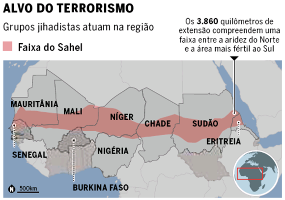
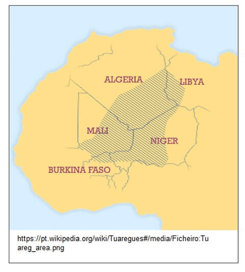
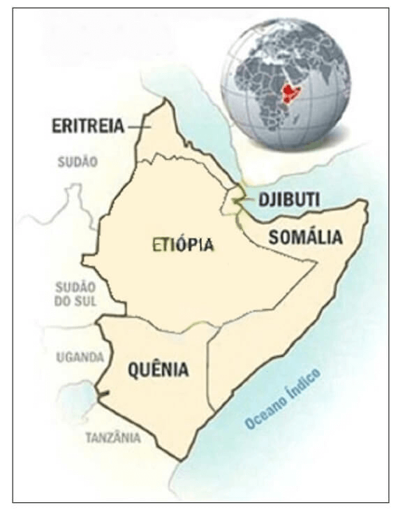

Conteúdo: Apartheid; Guerra Civil; Genocídio; Refugiados; Terrorismo.
Objetivo: Entender os conflitos atuais no continente africano.
Questão 01
(BRASIL ESCOLA 2022) Assinale a alternativa que reflete as condições sul-africanas
a) Com o fim do Apartheid, vários países europeus romperam relações com a África do Sul, o que provocou uma forte crise econômica.
b) A ascensão de novos países emergentes como a Nigéria, tem provocado problemas sociais e econômicos à África do Sul.
c) Após um “boom” de crescimento pós-Apartheid, a África do Sul tem apresentado vários problemas que se refletem na sociedade local.
d) O fraco crescimento econômico do país é um obstáculo à absorção dos negros no mercado de trabalho.
e) O fim da política do Apartheid não conseguiu ainda promover de forma significativa a inclusão dos negros na economia.
Comentário:
a) Falso – O fim do Apartheid não rompeu as relações dos países europeus com a África do Sul.
b) Falso – A Nigéria não tem apresentado ascensão, portanto, não é responsável por nenhum tipo de problema socioeconômico na África do Sul.
c) Falso – O país não apresentou um extraordinário crescimento econômico após o fim do Apartheid, não sendo motivo de problemas presentes na sociedade local.
d) Falso – O principal obstáculo para a inserção do negro no mercado de trabalho, são as consequências de tantos anos da política racial (Apartheid), onde a maioria dos negros não possuem qualificação profissional, além dos maiores empregadores serem brancos.
e) Verdadeiro – O fim do Apartheid não conseguiu estabelecer de forma expressiva a inclusão dos negros na economia. Após quase duas décadas de sua ocorrência, não foi possível promover uma política de inclusão da população negra nos meios de produção, persistindo vários problemas de ordem socioeconômica entre essas pessoas.
Questão 02
(FUVEST 2017)
"Cada vez mais pessoas fogem da guerra, do terror e da miséria econômica que assolam algumas nações do Oriente Médio e da África. Elas arriscam suas vidas para chegar à Europa. Segundo estimativas da Agência da ONU para Refugiados, até novembro de 2015, mais de 850 mil refugiados e imigrantes haviam chegado por mar à Europa naquele ano".
Garton Ash, Timothy. Europa e a volta dos muros. O Estado de S. Paulo, 29/11/2015. Adaptado.
Sobre a questão dos refugiados, no final de 2015, considere as três afirmações seguintes:
I. A criação de fronteiras políticas no continente africano, resultantes da partilha colonial, incrementou os conflitos étnicos, corroborando o elevado número de refugiados, como nos casos do Sudão e Sudão do Sul.
II. Além das mortes em conflito armado, da intensificação da pobreza e da insegurança alimentar, a guerra civil na Síria levou um contingente expressivo de refugiados para a Europa.
III. A política do apartheid teve grande influência na Nigéria, país de origem do maior número de refugiados do continente africano, em decorrência desse movimento separatista.
Está correto o que se afirma em:
a) I, apenas.
b) I e II, apenas.
c) III, apenas.
d) II e III, apenas.
e) I, II e III.
A crise de refugiados tem-se mostrado uma das mais importantes questões humanitárias da atualidade. Só até o mês de novembro de 2016 foram registradas aproximadamente 4200 mortes em tentativas frustradas de entrada na Europa. Conflitos étnicos e perseguições políticas e/ou religiosas se destacam como elementos fundamentais que alimentam” a crise.
Assim, especificamente quanto à questão:
I. O processo de colonização da África, cujo ápice ocorreu em 1885 com o Congresso de Berlim, desrespeitou origens étnicas dos africanos e serviu como gatilho para posteriores conflitos II. Desde o início da guerra civil na Síria em 2011(Primavera Árabe), o país se tornou o maior emissor de refugiados para a Europa.
III. O apartheid (política segregacionista) não ocorreu na Nigéria e sim na África do Sul entre 1948 e 1993.
A afirmação I está correta, pois a divisão da África entre os países europeus no final do século XIX, processo conhecido como a Partilha da África, resultado do imperialismo europeu em busca de matérias primas, estabeleceu no continente africano as chamadas fronteiras artificiais, desrespeitando as fronteiras étnicas dos povos africanos e colaborando até hoje para os conflitos étnicos, como o que resultou na divisão do Sudão e na criação do Sudão do Sul em 2011.
A afirmação II está correta, pois conflitos armados, pobreza e insegurança alimentar sempre foram determinantes na migração dos refugiados. Além disso, a Síria enfrenta há cinco anos uma intensa guerra civil que aumentou o drama da população civil síria e o consequente aumento do número de refugiados para a Europa.
A afirmação III está incorreta, pois a política do apartheid foi implantada na África do Sul como um sistema oficial de racismo, e não na Nigéria, como está na afirmação. Portanto, a alternativa B está correta.
Questão 03
(UNITAU-SP 2017) Em relação ao continente africano, é CORRETO afirmar:
a) No Sudão, os conflitos atuais se devem à permanência desde o período colonial, de uma política de segregação racial e territorial, promovida pelos brancos.
b) A Nigéria apresenta baixa média de IDH, as menores médias de expectativa de vida do planeta e altas taxas de mortalidade infantil e de subnutrição.
C) A maioria dos países africanos tornou-se independente no final do século XIX, devido ao desenvolvimento da industrialização nos países europeus.
d) O processo de colonização da África respeitou as fronteiras étnicas e culturais, fato que evitou a existência de conflitos armados no continente.
e) O Norte da África, ou África setentrional, é caracterizado pela presença da religião islâmica e pelo predomínio da população árabe.
Questão 04
(FUVEST 2023) Recentemente a região do Sahel, na África, vivenciou golpes de Estado em quatro países: Sudão, Mali, Chade e Burkina Faso. Podem ser indicadas como causas da instabilidade política na região:

A situação política turbulenta na região do Sahel, evidenciada pelos recentes golpes de Estado, envolve uma série de fatores complexos. Ao analisar as possíveis causas da instabilidade política na região, é importante considerar a história e as características socioeconômicas do Sahel. Refletir sobre a presença histórica de potências estrangeiras, os impactos da colonização, as dinâmicas étnicas e culturais e a distribuição de recursos naturais pode fornecer pistas importantes para identificar as causas subjacentes dos golpes de Estado. Identificar o que a região não possui pode ajudar a encontrar a resposta correta. Tente resolver sem ver a resposta
Resposta: Letra E. Escassez de recursos naturais, diversidade étnica e resquícios da colonização.
a) Atuação de potências estrangeiras, resquícios da colonização e alto desenvolvimento tecnológico.
b) Abundância de recursos naturais, atuação de movimentos separatistas e desigualdade socioeconômica.
c) Escassez de recursos naturais, alto desenvolvimento tecnológico e diversidade étnica.
d) Desigualdade socioeconômica, diversidade étnica e elevada produção agrícola.
e) Escassez de recursos naturais, diversidade étnica e resquícios da colonização.
a) Incorreta. A atuação de potências estrangeiras e resquícios da colonização podem contribuir para a instabilidade política em algumas regiões, mas o alto desenvolvimento tecnológico não é uma característica da região, pelo contrário.
b) Incorreta. A região do Sahel apresenta uma escassez de recursos. A atuação de movimentos separatistas pode ser uma causa, mas não é a única. A desigualdade socioeconômica é uma das principais causas da instabilidade política na região.
c) Incorreta. O alto desenvolvimento tecnológico não é uma característica relevante na região.
d) Incorreta. A diversidade étnica não é uma causa direta da instabilidade política no Sahel, mas sim um aspecto cultural importante da região. A elevada produção agrícola também não está diretamente relacionada à região, que sofre com carência de produção agrícola.
e) Correta. A escassez de recursos naturais, a diversidade étnica e os resquícios da colonização são causas significativas da instabilidade política no Sahel. A região enfrenta desafios socioeconômicos e políticos complexos, incluindo disputas por recursos, tensões étnicas e legados históricos da colonização europeia. Esses fatores contribuem para a instabilidade política e os golpes de Estado frequentes na região.
Questão 05
(UNICAMP 2016) País da África Austral que se tornou independente em 1975 após séculos de colonialismo europeu. No período do interior à independência, a terra passou a ser propriedade do Estado, com predomínio de uso pela população camponesa e com forte participação das mulheres na produção agrícola familiar. De 1976-1992 vivenciou intensos conflitos produzidos pela guerra civil envolvendo dois dos principais grupos armados do país.
O texto acima faz referência ao seguinte país:
a) Congo.
b) África do Sul.
c) Moçambique.
d) Nigéria.
A alternativa C está correta: Moçambique foi o país que alcançou a independência em 1975, após séculos de colonização portuguesa. Após a independência, adotou o socialismo como sistema de governo, influenciado pela ex-URSS. Moçambique é um país com numerosa população que habita as áreas rurais em pequenas propriedades, muitas delas comandadas pelas mulheres. Logo depois da independência conviveu por 16 anos com uma intensa guerra civil.
A alternativa a está errada porque o Congo, anteriormente denominado Zaire, é um pais localizado na África central, que se tornou independente da Bélgica em 1960. Após a independência a República do Congo vivenciou diversos conflitos internos, mas não nos mesmos moldes e intensidade da guerra civil moçambicana.
A alternativa b está errada: em nenhum momento, na África do Sul, após a independência do Reino Unido, em 193 1, a terra passou a ser propriedade do Estado, como ocorreu em Moçambique, que se transformou em um país socialista após a independência. A África do Sul é o pais mais industrializado do continente africano; durante anos manteve o regime de segregação racial denominado Apartheid que foi extinto, como política oficial do Estado, no início dos anos de 1990, com a ascensão do líder negro Nelson Mandela ao poder.
A alternativa d está errada: a Nigéria é um país localizado na parte noroeste do continente africano que se tornou independente do Reino Unido nos anos de 1960. Embora a Nigéria tenha vivido conflitos civis internos após a independência, não se configurou ai uma guerra civil como ocorreu em Moçambique.
Questão 06
(ESPM 2015) Em 21 de dezembro de 1961 a Bélgica concedeu autonomia interna a Ruanda e, em 28 de junho de 1962, a Assembleia Geral da ONU fixou para 1º. de junho a supressão da tutela e a concessão da independência à República Democrática de Ruanda, ressaltando que o governo independente não seria monoétnico. Tal cuidado não foi suficiente, pois os acontecimentos posteriores acabaram culminando em um dos mais violentos genocídios do século XX, estimando-se o número de mortos em 1.074.017, ou seja, um sétimo da população de Ruanda.
(Leila Hernandez. A África na sala de aula)
Em abril de 2014 completaram-se 20 anos do que ficou conhecido como genocídio de Ruanda. Diferenças, desigualdades, discriminações raciais, econômicas, sociais e políticas alimentaram o ódio. O assassinato do presidente Juvenal Habyarimana, em atentado ao avião em que viajava, foi o estopim do genocídio.
Sobre o genocídio em Ruanda assinale a alternativa correta:
a) foi praticado por mercenários belgas interessados na recolonização de Ruanda e exploração de suas riquezas.
b) foi praticado por ruandeses contra cidadãos europeus e norte-americanos acusados de responsabilidade pela miséria em Ruanda.
c) refletiu o ódio religioso entre cristãos e muçulmanos;
d) refletiu o ódio dos ruandeses contra as Forças de Paz enviadas pela ONU para apaziguar as disputas entre diferentes grupos políticos.
e) foi praticado pelo grupo étnico hutu contra a etnia tútsi e hutus moderados que formavam a oposição política no país, sendo que entre os mortos 93,7% eram tútsis.
Questão 07
(UNICAMP 2023)
“No ano de 2020, iniciou-se um conflito interno na Etiópia, com complexas implicações humanitárias, econômicas e geopolíticas, adicionando novas tensões à frágil estabilidade política na região do Chifre da África. ”.
(Adaptado de YARED, Tegbaru. Institute for Security Studies – ISS. Acesso em 09/06/2022.)
As causas do atual conflito na Etiópia resultam
Objetivo da questão é tratar sobre os conflitos em curso no continente africano. Com base no texto fornecido, é possível identificar algumas pistas importantes para chegar à resposta correta. O conflito na Etiópia iniciado em 2020 é descrito como um conflito interno, o que sugere que suas causas estão relacionadas aos assuntos dentro do próprio país. Considerando essas informações, é importante focar nas opções que abordam questões internas da Etiópia. Tente resolver sem ver a resposta
Resposta: Letra C. da tentativa de secessão da região do Tigré em função dos conflitos étnico-religiosos e políticos.
a) da instabilidade das instituições estatais gerada pelo processo de colonização europeia no século XVIII.
b) do conflito bélico com a Eritreia em razão da disputa pela saída para o Mar Mediterrâneo.
c) da tentativa de secessão da região do Tigré em função dos conflitos étnico-religiosos e políticos.
d) da participação de interesses estrangeiros na gestão dos recursos naturais etíopes, a exemplo do petróleo.
A alternativa A está incorreta, pois a Etiópia não foi colonizada pelos europeus.
A alternativa B está incorreta, pois o conflito atual é interno à Etiópia e também porque não se trata do Mar Mediterrâneo, uma vez que, historicamente, a Etiópia busca saída para o Mar Vermelho.
A alternativa C é a correta, pois o sangrento conflito armado instalado hoje na Etiópia resulta do movimento separatista do Tigré, situado na região norte do país.
A alternativa D está incorreta, pois o conflito mencionado não resulta do interesse de capitais estrangeiros e também porque a Etiópia não é produtora de petróleo.
Questão 08
(FUVEST 2015) O grupo Boko Haram, autor do sequestro, em abril de 2014, de mais de duzentas estudantes, que, posteriormente, segundo os líderes do grupo, seriam vendidas, nasceu de uma seita que atraiu seguidores com um discurso crítico em relação ao regime local. Pregando um islã radical e rigoroso, Mohammed Yusuf, um dos fundadores, acusava os valores ocidentais, instaurados pelos colonizadores britânicos, de serem a fonte de todos os males sofridos pelo país. Boko Haram significa “a educação ocidental é pecaminosa” em haussa, uma das línguas faladas no país.
www.cartacapital.com.br. Acessado em 13/05/2014. Adaptado.
O texto se refere:
a) a uma dissidência da Al’Qaeda no Iraque, que passou a atuar no país após a morte de Sadam Hussein.
b) a um grupo terrorista atuante nos Emirados Árabes, país economicamente mais dinâmico da região.
c) a uma seita religiosa sunita que atua no Sul da Líbia, em franca oposição aos xiitas.
d) a um grupo muçulmano extremista, atuante no Norte da Nigéria, região em que a maior parte da população vive na pobreza.
e) ao principal grupo religioso da Etiópia, ligado ao regime político dos tuaregues, que atua em toda a região do Saara.
O grupo terrorista Boko Haram surgiu na porção setentrional e mais pobre do território nigeriano. Fundamentalista islâmico, luta contra a influência ocidental em sua área de atuação, por entender que esta influência é o determinante das mazelas de sua população.
Nos mesmos moldes, surgiram grupos extremistas no norte do Iraque (Estado Islâmico), sul da Líbia (com forte influência de grupos tuaregues), na Etiópia (piratas divididos em diversos clãs).
Os Emirados Árabes, internacionalmente conhecidos por apoiar financeiramente grupos extremistas no Oriente Médio e na África, não possuem em seu território a atuação de grupos dessa natureza.
a) incorreta. Esta alternativa não descreve o Boko Haran, mas sim o Estado Islâmico, um grupo radical sunita piadista formado por membros dissidentes da Al Qaeda Iraquiana, membros sunitas radicais contrários ao governo iraquiano xiita estabelecido desde 2006, e membros dissidentes de outros grupos sunitas extremistas do Oriente Médio e arredores (Hamas, Irmandade Muçulmana, etc.).
b) incorreta. Esta alternativa em nada remete ao Book Harane. Ela indica o grupo dos Emirados Al-Islã, um grupo atuante dentro dos Emirados Árabes Unidos, suspeito de manter laços com a Irmandade Muçulmana do Egito..
c) incorreta. Esta alternativa remete à composição étnico-religiosa da Líbia e sugere que o Boko Haran é uma seita religiosa sunita que atua no Sul da Líbia, em franca oposição aos xiitas. Na verdade, a Líbia é um país que possui 97% de Islâmicos Sunitas e 3% de Islâmicos Ábditas (um grupo alternativo ao Sunismo e aos Xiitas). Os Xiitas não são mensuráveis na composição étnico-religiosa da Líbia e não são um grupo atuante a ponto de sofrer oposição dos sunitas. Nada na alternativa remete ao Book Harane.
d) correta. De fato, o grupo Boko Haran é um grupo muçulmano extremista, fundamentalista Sunita, associado à ideologia religiosa islamista Arabista (Sunismo Ultraconservador) atuante no Norte- Nordeste da Nigéria, região em que a maior parte da população também é islâmica Sunita, vive na pobreza e em províncias que têm o Sharia (leis do Islã) como legislação oficial.
e) incorreta. O primeiro ponto importante da alternativa é a afirmação de que o Boko Haran é o principal grupo religioso da Etiópia, que seria ligado aos Tuaregues. A afirmação está incorreta, porque o Boko Haran é um grupo radical islâmico e o cristianismo ortodoxo é a religião dominante na Etiópia. Outro ponto fundamental é que a alternativa trata os Tuaregues como um grupo étnico majoritário da região do Saara. O problema é que os Tuaregues (“abandonados pelos deuses”) são um grupo étnico berbere nômade que se distribui ao longo do deserto do Sachara entre países como a Argélia, o Mali, a Líbia, o Níger e Burkina Faso. Veja o mapa:

Questão 09
(CFTMG 2012) O país nasce a partir de um acordo de paz firmado em 2005, após 12 anos de uma guerra civil que deixou 1,5 milhão de mortos. Apesar de possuir grandes reservas de petróleo, eIe surge como um dos Estados mais pobres do mundo. Sua independência está sendo celebrada sem que as fronteiras entre o sul e o norte já estejam completamente definidas.
Fonte: NASSIF Luis, Online. Texto adaptado. Disponível em:. Acesso em: 12 set. 2011. (Adaptado)
Nesse contexto, as informações referem-se à criação da(o)
a) Líbia do Sul.
b) Etiópia do Sul.
c) Sudão do Sul.
d) Somália do Sul.
Questão 10
(UEMG 2012) Um dos maiores problemas da atualidade é a expressiva carência alimentar de vários países africanos. O texto e o mapa a seguir descrevem esta situação.
CONDENADOS À FOME
“No fim de julho, a ONU decretou que a região africana, em destaque no mapa, está sob estado de fome (...). Esse é o alerta que leva entidades de todo o mundo a enviar alimentos, remédios e médicos para atender os necessitados. Contudo, isso não ocorrerá na Somália. Seus habitantes não poderão ser socorridos pela solidariedade mundial, pois esse é o desejo do grupo Al Shabab, subordinados à Al Qaeda, que controla o sul do país”.
Revista Veja – 10/8/2011. p. 98. Texto Adaptado.

a) à disputa de poder e aos conflitos territoriais, que desencadearam guerras civis em vários países do Sudeste africano.
b) à intensa seca, que tem sido a principal causa da desnutrição infantil, deixando a região devastada e em estado de extrema pobreza.
c) às raízes do flagelo do Noroeste africano, sustentadas pelo modelo de dependência econômica implantado pelo colonialismo europeu no continente
d) aos problemas sociais do chamado Chifre da África, agravados em função da atuação das milícias, que impedem a entrada dos países ocidentais na Somália.